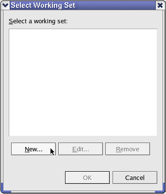
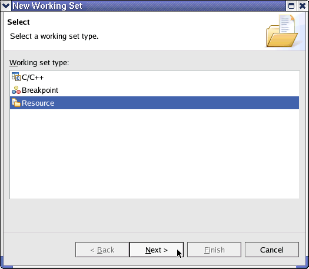
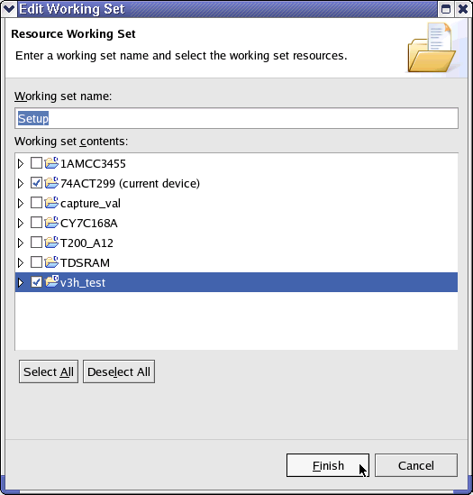

Creating a Working Set
You can define several working sets to group interested projects together. If a working set is selected in the Project Explorer view, only the device data contained in the working set are shown. This is effective when you are referring to other projects for reuse or collaborative test development.
To create a working set:
- In the toolbar of the Project Explorer view, click .
- In the menu choose Select Working Set.
- In the Select Working Set window, click New:

- In the New Working Set window select Resource
from the list and click Next:

- In the Edit Working Set window enter a working set name and select the
content you want to see in your working set. All device directories of your workspace are shown
in the selection field.

- Click Finish.
Your working set is now active, only the resources you defined in your working set are displayed in the Project Explorer view. To see the complete resources of your workspace again, click the Menu icon and deselect your working set.
Functional changes
- Introduced before SmarTest 6.3.2